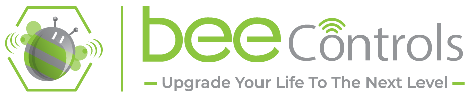

Privacy Policy — BeeAir
BeeAir app by BeeControls (ADGSC for Investment SAE). Last updated: 29 October 2026.
What the app does
BeeAir is the control app for a BeeControls smart-home or smart-building system. It connects to the Bee server installed for your home or building and lets you control lights, shutters, climate, scenes, music and cameras.
Information the app uses
- Sign-in details — your user name or e-mail address and password, given to you by your installer or building administrator. They are sent only to your own Bee server to sign you in. The password is never stored in the app; the app keeps a sign-in token on your device.
- Your home's devices and their state — rooms, device names and values (for example "light on"). They are loaded from your Bee server so they can be shown in the app.
- Camera images and intercom video — shown live from your Bee server. They are not saved in the app.
- Camera and microphone of your phone — used only when you start a door-intercom call, and only after you allow it.
- Local network — used to reach the Bee server inside your home.
What we do not do
- We do not sell your data and do not share it with advertisers.
- The app contains no advertising and no third-party tracking or analytics.
- We do not track you across other apps or websites.
Where your data is kept
Your home's data (devices, users, history) is kept on the Bee server of your home or building, not in the app. When you use the app from outside your home, the connection goes through BeeControls' encrypted remote link. The administrator of your system can see the audit log of actions (for example who switched a light).
Your choices
- You can sign out at any time in the app (Settings → Sign out).
- To change or delete your account, contact your system administrator or BeeControls support.
- You can turn off camera or microphone access in your phone's settings.
Children
The app is not directed to children under 13 and does not knowingly collect their information.
Contact
BeeControls — ADGSC for Investment SAE, 41 Ibn El Hakam Street, Zaitoun, Cairo, Egypt.
E-mail: developers@adgsc.com